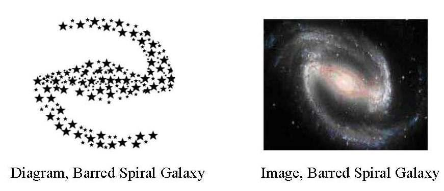
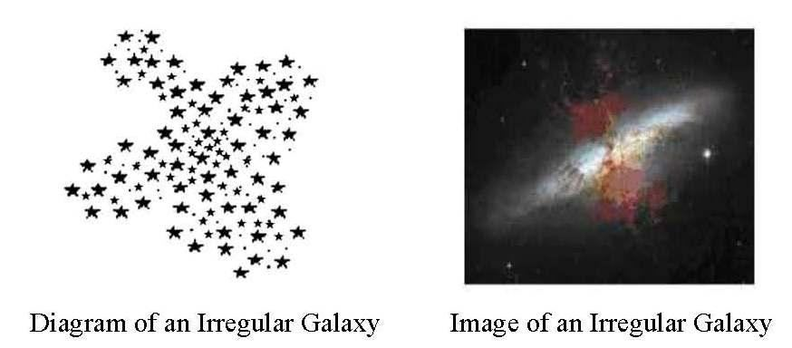

Part-2, Hudan lil Nas [Guidance for Mankind] Chapter 21 [Al-Anbiyah / The Prophets] Highlight: The Evolution of the Universe and the Need for True Faith
পার্ট-2, হুদান লিল নাস [মানবজাতির জন্য নির্দেশনা] অধ্যায় 21 [আল-আম্বিয়াহ / নবীগণ] হাইলাইট: মহাবিশ্বের বিবর্তন এবং সত্য বিশ্বাসের প্রয়োজন
Introduction
ভূমিকা
The chapter (surah) talks about the evolution of the universe and discusses the guidance sent to humans time to time. The chapter gives clues to understand the end times.
অধ্যায় (সূরা) মহাবিশ্বের বিবর্তন সম্পর্কে কথা বলে এবং সময়ে সময়ে মানুষের কাছে পাঠানো নির্দেশিকা নিয়ে আলোচনা করে। অধ্যায় শেষ সময় বোঝার সূত্র দেয়.
Flowchart
ফ্লোচার্ট
Segment 1: One God
সেগমেন্ট 1: এক ঈশ্বর
Section 1 [Verse 1-9]: The Last Prophet (pbuh) Section 2 [Verse 10-15]: Consequence of Rejecting a Message Section 3 [Verse 16-24]: The Concept of an Idolater Section 4 [Verse 25-30]: The Creation of the Universe (Main Discussion)
ধারা 1 [আয়াত 1-9]: শেষ নবী (সাঃ) বিভাগ 2 [আয়াত 10-15]: একটি বার্তা প্রত্যাখ্যান করার পরিণতি বিভাগ 3 [আয়াত 16-24]: একটি মূর্তিপূজার ধারণা ধারা 4 [আয়াত 25-30]: মহাবিশ্বের সৃষ্টি (আলোচনা)
Segment 2: Approaching Last Day and its Evolution
সেগমেন্ট 2: শেষ দিন এবং তার বিবর্তন কাছাকাছি
Section 5 [Verse 31]: Creation of the Earth Section 6 [Verse 32-33]: Protecting Roof Section 7 [Verse 34-50]: When the Promise will come to Pass? Section 8 [Verse 51-96]: Single Brotherhood trickling down to the End Times Section 9 [Verse 97-103]: The Last Day Section 10 [Verse104]: Future of the Universe (Main Discussion) Section 11 [Verse 105-112]: Conclusion
ধারা 5 [আয়াত 31]: পৃথিবীর সৃষ্টি ধারা 6 [আয়াত 32-33]: ছাদ রক্ষা করা বিভাগ 7 [আয়াত 34-50]: প্রতিশ্রুতি কখন পাস হবে? অধ্যায় 8 [পদ 51-96]: একক ভ্রাতৃত্ব শেষ সময়ের অধ্যায় 9 [আয়াত 97-103]: শেষ দিনের অধ্যায় 10 [আয়াত 104]: মহাবিশ্বের ভবিষ্যৎ (প্রধান আলোচনা) সেকশন 11 [আলোচনা 105-112]
Tafsir of the Surah Segment 1 One God
সূরা সেগমেন্ট 1 এর তাফসির এক ঈশ্বর
Section 1 of Chapter 21 [Verse 1-9]: The Last Prophet (pbuh)
অধ্যায় 21 এর সেকশন 1 [আয়াত 1-9]: শেষ নবী (সা.)
Closer and closer to mankind comes their Reckoning, yet they heed not, and they turn away. Never comes to them of a renewed message from their Lord but they listen to it as in jest; their hearts toying as with trifles. The wrongdoers conceal their private counsels: "Is this more than a man like you? Will you go to witchcraft with your eyes open?" Say: "My Lord knows word in the Skies and on Lands; He is the One that hears and knows." Nay, they say, "Medleys of dream! Nay, He forged it! Nay, He is a poet! Let him then bring us a verse like the ones that were sent to of old!" Before them not one of the populations, which We destroyed, believed; will these believe? Before you also, the apostles We sent were but men to whom We granted inspiration. If you realize this not, ask of those who possess the Message. Nor did We give them bodies that ate no food, nor were they exempt from death. In the end, We fulfilled to them Our promise, and We saved them and those whom We pleased, but We destroyed those who transgressed beyond bounds. Section-2 of Chapter 21 [Verse 10-15]: Consequence of Rejecting a Message
মানবজাতির নিকটবর্তী এবং নিকটবর্তী হয় তাদের হিসাব, তবুও তারা মনোযোগ দেয় না এবং তারা মুখ ফিরিয়ে নেয়। তাদের কাছে তাদের পালনকর্তার পক্ষ থেকে কোন নতুন বাণী আসে না, কিন্তু তারা তা ঠাট্টা-বিদ্রূপের মত শোনে। তাদের হৃদয় তুচ্ছ জিনিসের মতো খেলছে। জালেমরা তাদের গোপন পরামর্শ গোপন করে: "এটি কি আপনার মতো একজন লোকের চেয়ে বেশি? আপনি কি চোখ খোলা রেখে জাদুবিদ্যায় যাবেন?" বলুনঃ আমার পালনকর্তা নভোমন্ডলে ও যমীনের কথা জানেন, তিনিই শোনেন ও জানেন। বরং, তারা বলে, "স্বপ্নের মিলন! না, তিনি এটি তৈরি করেছেন! বরং, তিনি একজন কবি! সে আমাদের কাছে একটি আয়াত নিয়ে আসুক যা প্রাচীনকালে প্রেরিত হয়েছিল!" তাদের পূর্বে আমি যে জনগোষ্ঠীকে ধ্বংস করেছিলাম তাদের একটিও বিশ্বাস করেনি। এগুলো কি বিশ্বাস করবে? তোমাদের পূর্বে আমি যে সকল রসূল প্রেরণ করেছি, তারা কেবল পুরুষই যাদের প্রতি আমরা ওহী দান করেছি। যদি আপনি এটি উপলব্ধি না করেন তবে যারা বার্তার অধিকারী তাদের জিজ্ঞাসা করুন। আমরা তাদেরকে এমন দেহ দেইনি যারা কোন খাবার খায়নি এবং তারা মৃত্যু থেকেও রেহাই পায়নি। শেষ পর্যন্ত, আমরা তাদের প্রতি আমাদের প্রতিশ্রুতি পূর্ণ করেছি এবং আমরা তাদের এবং যাদেরকে ইচ্ছা রক্ষা করেছি, কিন্তু যারা সীমালঙ্ঘন করেছিল তাদের ধ্বংস করে দিয়েছি। অধ্যায় 21 [আয়াত 10-15] এর বিভাগ-2: একটি বার্তা প্রত্যাখ্যান করার পরিণতি
We have revealed for you a Book in which is a Message for you—will you not then understand? How many were the populations We utterly destroyed, because of their iniquities, setting up in their places other peoples? Yet, when they felt Our punishment, behold, they flee from it. Flee not, but return to the good things of this life, which were given you and to your homes in order that you may be called to account. They said: "Ah! Woe to us! We were indeed wrong- doers!" And that cry of theirs ceased not till We made them as a field that is mown as ashes, silent and quenched.
আমি তোমাদের জন্য একটি কিতাব অবতীর্ণ করেছি যাতে রয়েছে তোমাদের জন্য একটি বাণী-তবে কি তোমরা বুঝবে না? কত জনসংখ্যাকে আমরা সম্পূর্ণরূপে ধ্বংস করেছিলাম, তাদের অন্যায়ের কারণে, তাদের জায়গায় অন্য লোকদের স্থাপন করেছি? তারপরও যখন তারা আমার শাস্তি অনুভব করে, তখন তারা তা থেকে পলায়ন করে। পলায়ন করো না, তবে এই জীবনের ভাল জিনিসগুলিতে ফিরে যাও, যা তোমাকে এবং তোমার ঘরে দেওয়া হয়েছিল যাতে তোমার কাছে হিসাব নেওয়া হয়। তারা বললঃ হায়! আফসোস আমাদের! আমরা ছিলাম জালেম! এবং তাদের সেই কান্না থামেনি যতক্ষণ না আমরা তাদের ছাইয়ের মতো কাটা, নীরব এবং নিভিয়ে ফেলা ক্ষেত্র হিসাবে তৈরি করি।
Section-3 of Chapter 21 [Verse 16-24]: The Concept of an Idolater
অধ্যায় 21 এর অধ্যায়-3 [আয়াত 16-24]: একটি প্রতিমাকারীর ধারণা
Not for sport did We create the Skies and Lands and all that is between! If it had been Our wish to take a pastime, We should surely have taken it from the things nearest to Us; if We would do! Nay, We hurl the Truth against falsehood, and it knocks out its brain, and behold, falsehood does perish! Ah! Woe to you for the things you ascribe! To Him belong all in the Skies and on Lands. Even those who are in His presence are not too proud to serve Him, nor are they weary; they celebrate His praises night and day, nor do they ever flag or intermit. Or have they taken gods from the earth who can raise the dead? If there were in the Skies and Lands other gods besides God, there would have been confusion in both! But glory to God, the Lord of the Arsh, above what they attribute to Him! He cannot be questioned for His acts, but they will be questioned. Or have they taken for worship (gods) besides Him? Say, "Bring your convincing proof; this is the Message of those with me and the Message of those before me." But most of them know not the Truth, and so turn away.
খেলাধুলার জন্য নয় আমরা আকাশ ও ভূমি এবং এর মধ্যে যা কিছু আছে তা সৃষ্টি করেছি! আমরা যদি একটি বিনোদন নিতে চাইতাম, তবে অবশ্যই আমাদের কাছের জিনিসগুলি থেকে নেওয়া উচিত ছিল; যদি আমরা করতাম! বরং, আমরা সত্যকে মিথ্যার বিরুদ্ধে নিক্ষেপ করি, এবং এটি তার মস্তিষ্ককে ছিটকে দেয় এবং দেখ, মিথ্যা ধ্বংস হয়ে যায়! আহ! আপনি যে জিনিসগুলি বর্ণনা করেন তার জন্য ধিক্! আকাশে ও ভূমিতে সবই তাঁরই। এমনকি যারা তাঁর সান্নিধ্যে আছেন তারাও তাঁর সেবা করতে গর্বিত নয়, ক্লান্তও নয়; তারা রাত দিন তাঁর প্রশংসা উদযাপন করে, এবং তারা কখনও পতাকা বা বিরতি দেয় না। নাকি তারা মাটি থেকে এমন দেবতাদের নিয়ে গেছে যারা মৃতদের জীবিত করতে পারে? আকাশ ও ভূমিতে ঈশ্বর ছাড়া অন্য দেবতা থাকলে উভয়ের মধ্যেই বিভ্রান্তি থাকত! কিন্তু ঈশ্বরের মহিমা, আরশের পালনকর্তা, তারা যা বলে তার চেয়েও বেশি! তাকে তার কর্মের জন্য জিজ্ঞাসাবাদ করা যাবে না, তবে তাদের জিজ্ঞাসা করা হবে। নাকি তারা তাকে বাদ দিয়ে উপাস্য গ্রহণ করেছে? বল, ‘তোমাদের সুস্পষ্ট প্রমাণ নিয়ে আস, এটা আমার সঙ্গীদের বাণী এবং আমার পূর্ববর্তীদের বার্তা’। কিন্তু তাদের অধিকাংশই সত্য জানে না, তাই মুখ ফিরিয়ে নেয়।
Remarks:
মন্তব্য:
The paragraphs above counter the 'Hindu concept of God' by questioning its authority. Some Hindus believe in one God but worship Him in various forms, attributing to Him wives and children. In their view, the supreme God is Narayana, who is regarded as Sayam Bhagavan (God Himself). Narayana is considered formless and eternal, with three primary manifestations: Brahma, Vishnu, and Shiva. Brahma is represented by an idol with four heads and eight hands. He is the creator god, and his wife, Saraswati, is the goddess of knowledge and its distribution. Shiva is represented by an idol with four hands and a third eye. He is the god of destruction and resides in the Himalayas with his wife, Parvati. They have two sons, Ganesha and Kartikeya. Ultimately, they (Hindus) worship the perceived wives and children of God, such as Saraswati, Ganesha, and others. Their concepts of idol worship vary from person to person. Many, especially among illiterate women and children, may not have an understanding of one God and instead focus solely on worshipping the idols. Vishnu is represented by an idol with four hands. He is the preserver, and his wife, Lakshmi, is the goddess of wealth. Vishnu is also represented through idols of his various avatars. An avatar is considered an incarnation of God in human form. Krishna and Ram are revered as avatars. Some interpretations suggest that their prophecies indicate Muhammad (pbuh) as the final avatar. This implies that prophets who appeared in India over time may now be worshipped as avatars, similar to how some Christians regard Jesus as ‗God in flesh. Krishna had many lovers. However, the verses above state: ―Not for sport did We create the Skies and Lands and all that is between! If it had been Our wish to take a pastime, We should surely have taken it from the things nearest to Us; if We would do!‖ Some consider the sun, air, and fire as fundamental forms of God, implying that creation itself is an expression of God. As a result, they bow down to everything. In the paragraph above, the Quran asks them to show the authority for their practices: "Bring your convincing proof; this is the Message of those with me and the Message of those before me."
উপরের অনুচ্ছেদগুলি 'ঈশ্বরের হিন্দু ধারণা' এর কর্তৃত্বকে প্রশ্নবিদ্ধ করে এর বিরুদ্ধে। কিছু হিন্দু এক ঈশ্বরে বিশ্বাস করে কিন্তু বিভিন্ন রূপে তাঁর উপাসনা করে, তাঁর স্ত্রী ও সন্তানদের গুণে। তাদের দৃষ্টিতে, পরম ঈশ্বর হলেন নারায়ণ, যাকে শয়ম ভগবান (স্বয়ং ঈশ্বর) হিসাবে গণ্য করা হয়। নারায়ণকে নিরাকার এবং শাশ্বত বলে মনে করা হয়, যার তিনটি প্রাথমিক প্রকাশ রয়েছে: ব্রহ্মা, বিষ্ণু এবং শিব। ব্রহ্মাকে চারটি মাথা এবং আট হাত বিশিষ্ট একটি মূর্তি দ্বারা প্রতিনিধিত্ব করা হয়। তিনি স্রষ্টা দেবতা, এবং তাঁর স্ত্রী সরস্বতী হলেন জ্ঞান ও তার বিতরণের দেবী। শিব চার হাত এবং তৃতীয় চোখ বিশিষ্ট একটি মূর্তি দ্বারা প্রতিনিধিত্ব করা হয়। তিনি ধ্বংসের দেবতা এবং তার স্ত্রী পার্বতীর সাথে হিমালয়ে বসবাস করেন। তাদের দুই পুত্র, গণেশ ও কার্তিকেয়। শেষ পর্যন্ত, তারা (হিন্দুরা) ঈশ্বরের অনুভূত স্ত্রী এবং সন্তানদের পূজা করে, যেমন সরস্বতী, গণেশ এবং অন্যান্য। মূর্তি পূজা সম্পর্কে তাদের ধারণা ব্যক্তি ভেদে ভিন্ন ভিন্ন। অনেকের, বিশেষ করে নিরক্ষর নারী ও শিশুদের মধ্যে, এক ঈশ্বরের বোধগম্যতা নাও থাকতে পারে এবং এর পরিবর্তে শুধুমাত্র মূর্তি পূজার দিকে মনোনিবেশ করে। বিষ্ণু চার হাত বিশিষ্ট একটি মূর্তি দ্বারা প্রতিনিধিত্ব করা হয়। তিনি রক্ষক, এবং তার স্ত্রী লক্ষ্মী হলেন সম্পদের দেবী। বিষ্ণুকে তার বিভিন্ন অবতারের মূর্তির মাধ্যমেও উপস্থাপন করা হয়। একজন অবতারকে মানবরূপে ঈশ্বরের অবতার হিসেবে বিবেচনা করা হয়। কৃষ্ণ এবং রাম অবতার হিসাবে পূজনীয়। কিছু ব্যাখ্যা থেকে বোঝা যায় যে তাদের ভবিষ্যদ্বাণীগুলি মুহাম্মদ (সাঃ) কে চূড়ান্ত অবতার হিসাবে নির্দেশ করে। এটি বোঝায় যে সময়ের সাথে সাথে ভারতে আবির্ভূত নবীদের এখন অবতার হিসাবে উপাসনা করা যেতে পারে, যেমন কিছু খ্রিস্টান যীশুকে 'মাংসের ঈশ্বর' হিসাবে বিবেচনা করে। কৃষ্ণের অনেক প্রেমিক ছিল। যাইহোক, উপরের আয়াতে বলা হয়েছে: - আমরা আকাশ ও ভূমি এবং এর মধ্যে যা কিছু আছে তা খেলাধুলার জন্য তৈরি করিনি! আমরা যদি একটি বিনোদন নিতে চাইতাম, তবে অবশ্যই আমাদের কাছের জিনিসগুলি থেকে নেওয়া উচিত ছিল; যদি আমরা করতাম!'' কেউ কেউ সূর্য, বায়ু এবং আগুনকে ঈশ্বরের মৌলিক রূপ বলে মনে করে, ইঙ্গিত করে যে সৃষ্টি নিজেই ঈশ্বরের একটি অভিব্যক্তি। ফলে তারা সবকিছুর কাছে মাথা নত করে। উপরের অনুচ্ছেদে, কুরআন তাদেরকে তাদের অনুশীলনের জন্য কর্তৃত্ব দেখাতে বলে: "আপনার বিশ্বাসযোগ্য প্রমাণ আনুন; এটি আমার সাথে যারা এবং আমার পূর্ববর্তীদের বার্তা।"
Section 4 of Chapter 21 [Verse 25-30]: The Creation of the Universe (Main Discussion)
অধ্যায় 21 এর অধ্যায় 4 [আয়াত 25-30]: মহাবিশ্বের সৃষ্টি (মূল আলোচনা)
Not an apostle did We send before you without this inspiration sent by Us to him that: "there is no god but I, therefore worship and serve Me". And they say: "Most Gracious has begotten offspring." Glory to Him! They are servants raised to honor. They speak not before He speaks, and they act by His Command. He knows what is before them and what is behind them, and they offer no intercession except for those who are acceptable, and they stand in awe and reverence of His (Glory). If any of them should say, "I am a god besides Him", such a one We should reward with Hell—thus do We reward those who do wrong. Do not the Unbelievers see that the Skies and Lands were joined together (as one unit of creation) before we clove them asunder? We made from water every living thing. Will they not then believe?
আমরা আপনার পূর্বে এমন কোন রসূল পাঠাইনি যে, আমাদের প্রেরিত এই প্রেরনা ব্যতীত যে, "আমি ব্যতীত কোন উপাস্য নেই, অতএব আমার ইবাদত কর এবং দাসত্ব কর"। এবং তারা বলেঃ পরম করুণাময় সন্তান জন্ম দিয়েছেন। তাঁর মহিমা! তারা সম্মানের জন্য উত্থিত সেবক। তিনি কথা বলার আগে তারা কথা বলে না, এবং তারা তার আদেশে কাজ করে। তিনি জানেন যা তাদের সামনে আছে এবং যা তাদের পিছনে রয়েছে এবং তারা গ্রহণযোগ্য ব্যক্তি ব্যতীত আর কোন সুপারিশ করে না এবং তারা তাঁর (মহিমা) প্রতি ভীতি ও শ্রদ্ধায় দাঁড়িয়ে থাকে। যদি তাদের মধ্যে কেউ বলে, "আমি তাঁর পরিবর্তে একজন উপাস্য", তাহলে তাকে আমরা জাহান্নাম দিয়ে পুরস্কৃত করব-যারা অন্যায় করে তাদেরকে আমরা এভাবেই পুরস্কৃত করি। কাফেররা কি দেখে না যে, আকাশ ও ভূমিকে একত্রিত করা হয়েছে (সৃষ্টির একক হিসেবে) আমরা তাদের বিচ্ছিন্ন করার আগেই? আমরা প্রতিটি জীবন্ত জিনিস পানি থেকে তৈরি করেছি। তাহলে কি তারা ঈমান আনবে না?
Remarks:
মন্তব্য:
The last paragraph of the above verses provides the scope for discussing the creation of the universe. Here, I will explore how the universe was created. It is the main discussion of creation. However, the Quran is not intended to describe the creation of the universe; it is a book of religion. It mentions creation in fragments, primarily to affirm its authenticity as a revelation from the true Creator. So, to present a complete picture, I have put the appropriate verses in the creation story of modern cosmology. If one removes the verses and religious talks, one will find the story deeply inspired by ―The Encyclopedia of Space Travel and Astronomy‖ edited by John Man. In subsequent chapters, the knowledge of this Section will help us predict the future and related Dooms Day. Several landmark discoveries of the 20th century have enabled us to describe how the universe is evolving. These discoveries have led to the development of various theories, and I have used a common framework from these theories. I have integrated verses from the Quran with these discoveries to create a narrative that is supported by both religion and science—with a preference given to religion. The sequence of discussion I have followed below aligns with the structure commonly used in the books of cosmology: 1. General Appearance of the Universe 2. Receding Galaxies 3. Expanding Universe 4. Mystery of Darkness 5. Singularity / Big Bang 6. Cosmic Microwave Background Radiation 7. The Creation of Smoke 8. Formation of Skies and Galaxies 9. After the James Webb Telescope 10. A Soul Single (Nafsin-Wahidatin) 11. Laws of Nature 12. Concluding the Creation of Universe 13. Creation of Life14. Allah, the Creator 15. Conclusion 16. Summary 1. General Appearance of the Universe
উপরের আয়াতের শেষ অনুচ্ছেদটি মহাবিশ্বের সৃষ্টি নিয়ে আলোচনার সুযোগ প্রদান করে। এখানে, আমি অন্বেষণ করব কিভাবে মহাবিশ্ব সৃষ্টি হয়েছে। এটি সৃষ্টির মূল আলোচনা। যাইহোক, কুরআন মহাবিশ্বের সৃষ্টি বর্ণনা করার উদ্দেশ্যে নয়; এটা ধর্মের বই। এটি টুকরো টুকরো সৃষ্টির কথা উল্লেখ করে, প্রাথমিকভাবে সত্য স্রষ্টার কাছ থেকে উদ্ঘাটন হিসাবে এর সত্যতা নিশ্চিত করার জন্য। তাই, একটি পূর্ণাঙ্গ চিত্র উপস্থাপনের জন্য, আমি আধুনিক সৃষ্টিতত্ত্বের সৃষ্টি কাহিনীতে উপযুক্ত শ্লোকগুলি রেখেছি। যদি কেউ শ্লোক এবং ধর্মীয় বক্তৃতাগুলি সরিয়ে দেয়, তবে জন ম্যান দ্বারা সম্পাদিত "দ্য এনসাইক্লোপিডিয়া অফ স্পেস ট্রাভেল অ্যান্ড অ্যাস্ট্রোনমি" দ্বারা গভীরভাবে অনুপ্রাণিত গল্পটি পাওয়া যাবে। পরবর্তী অধ্যায়গুলিতে, এই বিভাগের জ্ঞান আমাদের ভবিষ্যত এবং সম্পর্কিত ডুমস ডে ভবিষ্যদ্বাণী করতে সাহায্য করবে। 20 শতকের বেশ কিছু যুগান্তকারী আবিষ্কার আমাদেরকে মহাবিশ্ব কিভাবে বিকশিত হচ্ছে তা বর্ণনা করতে সক্ষম করেছে। এই আবিষ্কারগুলি বিভিন্ন তত্ত্বের বিকাশের দিকে পরিচালিত করেছে এবং আমি এই তত্ত্বগুলি থেকে একটি সাধারণ কাঠামো ব্যবহার করেছি। আমি এই আবিষ্কারগুলির সাথে কুরআনের আয়াতগুলিকে একত্রিত করেছি একটি বর্ণনা তৈরি করতে যা ধর্ম এবং বিজ্ঞান উভয় দ্বারা সমর্থিত - ধর্মকে অগ্রাধিকার দিয়ে। আমি নীচে যে আলোচনার ক্রম অনুসরণ করেছি তা সাধারণত কসমোলজির বইগুলিতে ব্যবহৃত কাঠামোর সাথে সারিবদ্ধ করে: 1. মহাবিশ্বের সাধারণ চেহারা 2. ছায়াপথ 3. মহাবিশ্বের সম্প্রসারণ 4. অন্ধকারের রহস্য 5. এককতা / বিগ ব্যাং 6. মহাজাগতিক মাইক্রোওয়েভ ব্যাকগ্রাউন্ড দ্য S7m এর বিকিরণ। এবং গ্যালাক্সি 9. জেমস ওয়েব টেলিস্কোপের পরে 10. একটি সোল সিঙ্গেল (নাফসিন-ওয়াহিদাতিন) 11. প্রকৃতির নিয়ম 12. মহাবিশ্বের সৃষ্টির উপসংহার 13. জীবনের সৃষ্টি14. আল্লাহ, স্রষ্টা 15. উপসংহার 16. সারাংশ 1. মহাবিশ্বের সাধারণ চেহারা
The universe is full of gases, free-floating dust, stars, and other celestial objects. These are not randomly scattered across space; instead, they are organized into systems called galaxies. Galaxies are classified into four types: Spiral Galaxy, Barred Spiral Galaxy, Elliptical Galaxy, and Irregular Galaxy.
মহাবিশ্ব গ্যাস, মুক্ত-ভাসমান ধূলিকণা, তারা এবং অন্যান্য স্বর্গীয় বস্তুতে পূর্ণ। এগুলো এলোমেলোভাবে মহাশূন্যে ছড়িয়ে ছিটিয়ে নেই; পরিবর্তে, তারা গ্যালাক্সি নামক সিস্টেমে সংগঠিত হয়। ছায়াপথগুলিকে চার প্রকারে শ্রেণীবদ্ধ করা হয়েছে: সর্পিল গ্যালাক্সি, ব্যারেড স্পাইরাল গ্যালাক্সি, উপবৃত্তাকার গ্যালাক্সি এবং অনিয়মিত গ্যালাক্সি।
FIGURE 21.1: Spiral Galaxy

চিত্র 21_1 / Figure 21_1
চিত্র 21.1: স্পাইরাল গ্যালাক্সি
চিত্র 21_1 / Figure 21_1
FIGURE 21.2: Barred Spiral Galaxy FIGURE 21.3: Elliptical Galaxy

চিত্র 21_2 / Figure 21_2
চিত্র 21.2: ব্যারেড স্পাইরাল গ্যালাক্সি চিত্র 21.3: উপবৃত্তাকার গ্যালাক্সি
চিত্র 21_2 / Figure 21_2
FIGURE 21.4: Irregular Galaxy

চিত্র 21_4 / Figure 21_4
চিত্র 21.4: অনিয়মিত গ্যালাক্সি
চিত্র 21_4 / Figure 21_4
Our solar system lies within a galaxy called the Milky Way, which contains about 100 billion stars. There are also vast amounts of free gas and dust, capable of forming another 10 billion stars. A typical galaxy ranges from 3,000 to 350,000 light- years in diameter. A dwarf galaxy contains about ten million stars, while a large galaxy may have as many as several trillion stars. In general, galaxies are approximately 3 million light- years apart from each other. There are about 170 billion galaxies in the observable universe, making it unimaginably vast. In the Quran, a galaxy is referred to as the 'House of Stars' (Mawaqin-Nujumi).
আমাদের সৌরজগৎ মিল্কিওয়ে নামে একটি গ্যালাক্সির মধ্যে অবস্থিত, যেখানে প্রায় 100 বিলিয়ন তারা রয়েছে। এছাড়াও প্রচুর পরিমাণে মুক্ত গ্যাস এবং ধূলিকণা রয়েছে, যা আরও 10 বিলিয়ন তারা গঠন করতে সক্ষম। একটি সাধারণ গ্যালাক্সির ব্যাস 3,000 থেকে 350,000 আলোকবর্ষ পর্যন্ত হয়ে থাকে। একটি বামন গ্যালাক্সিতে প্রায় দশ মিলিয়ন তারা থাকে, যখন একটি বড় গ্যালাক্সিতে কয়েক ট্রিলিয়ন তারা থাকতে পারে। সাধারণভাবে, গ্যালাক্সিগুলি একে অপরের থেকে প্রায় 3 মিলিয়ন আলোকবর্ষ দূরে। পর্যবেক্ষণযোগ্য মহাবিশ্বে প্রায় 170 বিলিয়ন গ্যালাক্সি রয়েছে যা এটিকে কল্পনাতীতভাবে বিশাল করে তোলে। কুরআনে, একটি ছায়াপথকে 'হাউস অফ স্টার' (মাওয়াকিন-নুজুমি) হিসাবে উল্লেখ করা হয়েছে।